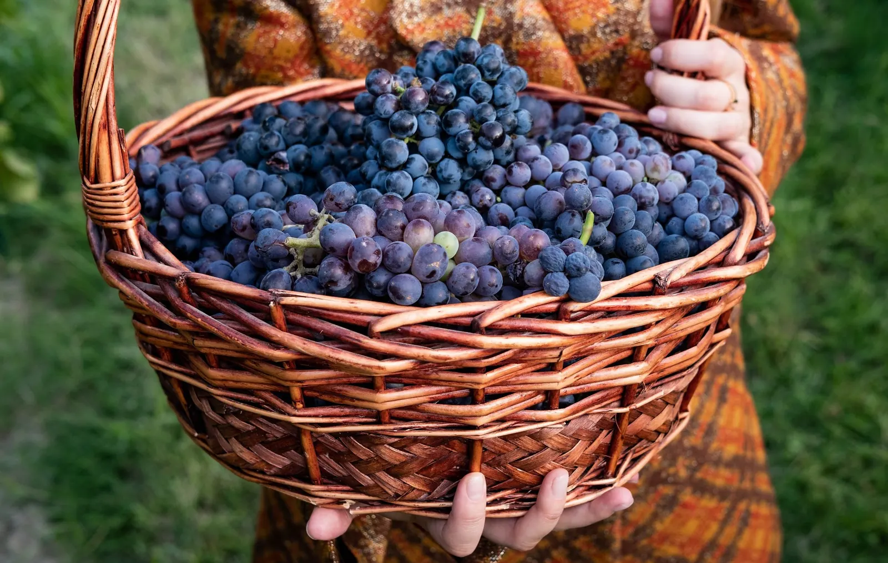
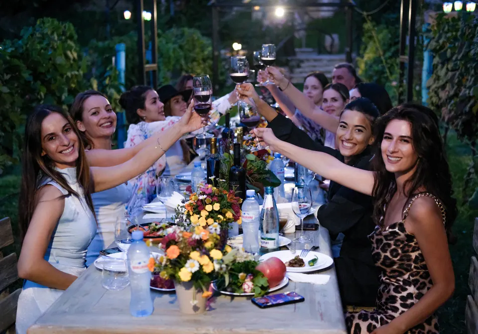
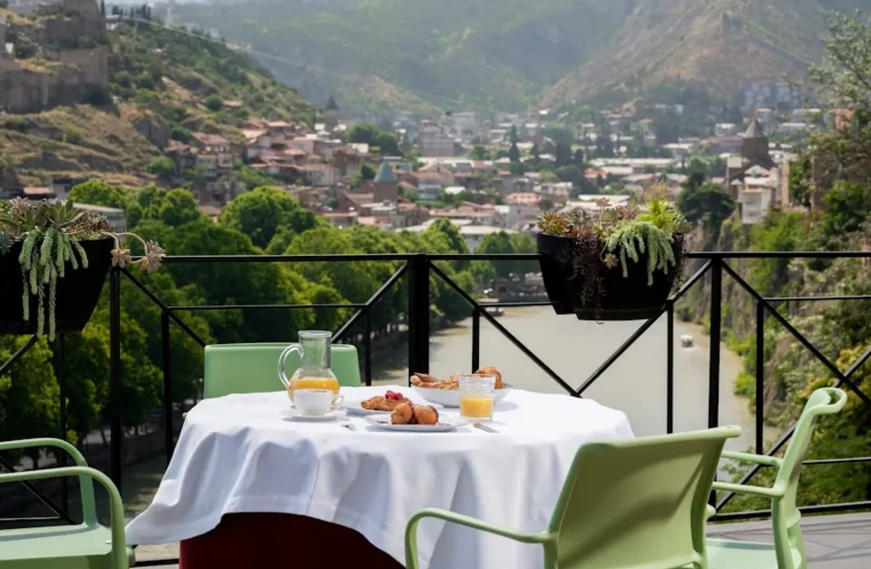
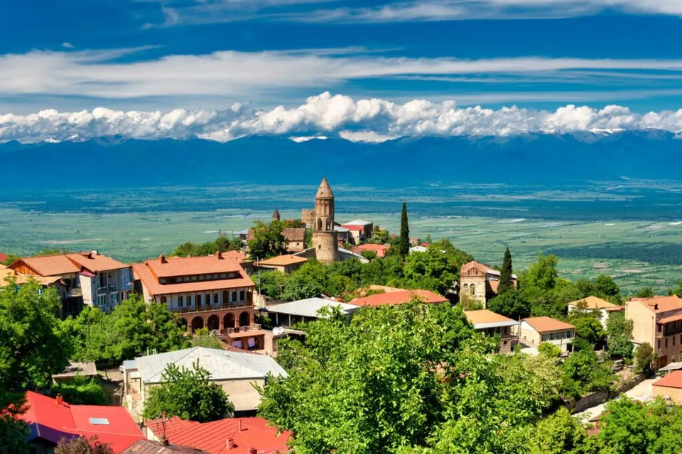
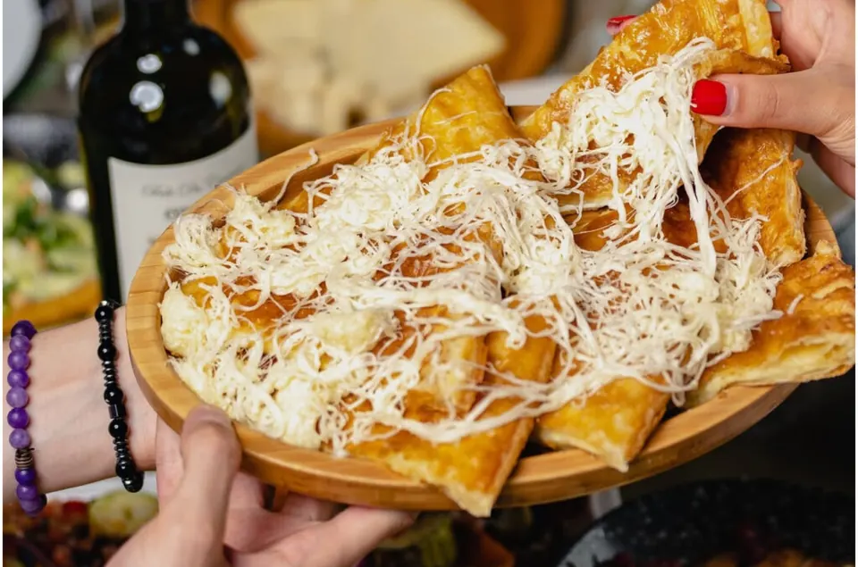

Ртвели — собираем виноград, собираем впечатления
- 5 насыщенных дней
- До 10 человек
- 1300 $

Программа
Погрузитесь в атмосферу сбора урожая винограда — с песнями, танцами, гастрономическими открытиями и настоящим виноделием. Почувствуйте себя частью грузинской традиции: давите виноград, также весело, как Челентано. Готовьте национальные блюда, пробуйте лучшие вина, танцуйте грузинское многоголосие и наслаждайтесь сочными экскурсиями. Всё включено. Всё — по душе.
Маршрут
- Тбилиси
- Мцхета
- Телави
- Сигнахи
- Монастырь Бодбе
- Тбилиси
Программа по дням
- День 1
Личная встреча, индивидуальный трансфер из аэропорта (вода и музыка в машине), отель 4* с видом на Куру. Вечером ужин с шоу-программой — живая музыка, танцы, тосты. Ночь в Тбилиси.
- День 2
Выезд в 10:00, Кахетия. Микрозона Манави — маленькая винодельня, экскурсия, дегустация белого, янтарного, красного, лёгкий обед (домашний сыр, лепёшки, салаты). Монастырь Бодбе (св. Нина). Сигнахи — Пиросмани, «Миллион алых роз», крепостная стена. Винодельня в микрозоне Кинзмараули — сбор винограда, виноград давят ногами, лепка хинкали, чурчхела, ужин среди виноградников с песнями и тостами. Ночь в винном отеле в Кахетии.
- День 3
Выезд в 11:00. Монастырь Некреси (больше 1500 лет, панорама Алазанской долины). Суперсовременная винодельня в Алазанской долине («Rolls-Royce в мире вина») — экскурсия и дегустация. Обед в грузинской семье. Возвращение и ночь в Тбилиси.
- День 4
Выезд в 10:00. Джвари. Шато Мухрани — экскурсия, погреб, дегустация с закусками. Обед в грузинской семье в доме бывшего солиста группы «Сими». Мцхета и Светицховели, свободное время (специи, чурчхела, сувениры, кофе). Пешая прогулка по Тбилиси 2–3 часа — дворики, истории про вино, любовь и старый город. Ресторан «Фуникулёр» (аджарские хачапури, пончики, лимонады Лагидзе). Ночь в отеле в Тбилиси.
- День 5
Индивидуальный трансфер в аэропорт.
Что входит
- индивидуальный трансфер из аэропорта в первый и последний день
- все трансферы по маршруту
- проживание в номере Double в отелях 4 звезды в Тбилиси и в Кахетии (одноместный — за дополнительную оплату)
- завтраки в отелях
- ужин в ресторане с шоу-программой (в Тбилиси)
- все дегустации в Кахетии, заявленные в программе
- обед в Кахетии
- мастер-классы и участие в сборе винограда
- ужин на виноградниках
- дегустация и экскурсия на винодельнях
- обед в грузинской семье (2 раза по маршруту)
- ужин в ресторане «Фуникулёр» с видом на Тбилиси
- услуги профессионального гида на протяжении всего маршрута
- все входные билеты по программе
- организация и сопровождение экскурсий, мастер-классов
Оплачивается отдельно
- авиа- и ЖД-билеты до Тбилиси и обратно
- ужин в отеле в первый день (если рейс поздний)
- личные расходы



